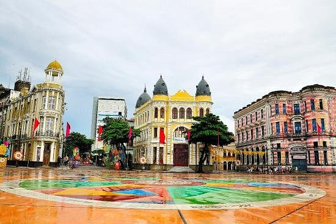

O Famoso Marco Zero
O Marco Zero, localizado na Praça Rio Branco, é o coração cultural e o ponto de partida das estradas de Pernambuco. É um dos lugares mais fotogênicos e cheios de história da cidade.

O que você encontra por lá?
Caminhando pela praça, você pode admirar a belíssima obra de arte do pintor Cícero Dias desenhada no chão e olhar para o mar para ver as famosas esculturas de Francisco Brennand.
É um passeio imperdível para quem quer sentir a verdadeira energia recifense, tomar uma água de coco e aproveitar a brisa do oceano.